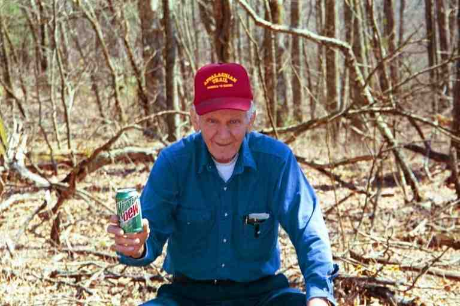
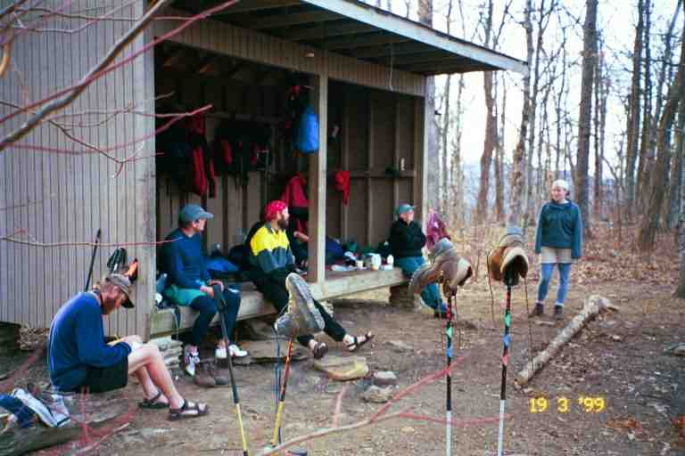

When the trail emerges from the woods at Neels Gap you immediately see that the only thing there is the Walasi-Yi Centre. The Centre consists of two stone buildings connected by a breezeway beneath which the trail passes, making this the only place on the AT where the trail passes through a building. The Centre is a backpacking outfitter that also carries a selection of food supplies for thru hikers. Because it is located at the 30 mile mark of the trail, the Centre sees most of the northbound thru hiking population and is therefore an extremely busy spot in spring. This is the first spot that the thru hikers are able to send items back home. After a couple of days of carrying a heavy pack, many hikers re-assess the items they have brought with them. Many buy better equipment and/or send home unnecessary items. In 1996, the store shipped at least four tons of supplies home for hikers. It is also the first spot where hikers using mail drops (re-supplying by mail) can receive their packages.
We were looking forward to Neels Gap because we heard they carried fresh sandwiches and fruit. Unfortunately, they had sold all of them when we arrived. We heard they also had a hostel on the premises, however. they had closed it by order of the state of Georgia which owned the buildings. We phoned Goose Creek cabins located a few miles down the road but found it a little expensive and instead decided to stay at a campsite a mile further up the trail.
We spent a few hours at the Centre. We ate some Ben and Jerry's ice cream (more about this trail staple another time) and some microwave heated snacks and we purchased some food items for the next 4-5 days. The food supply was not large but had all the most popular hiker items. (Lipton, Mac and cheese, power bars, candy bars, etc.). The zippers on our 15 year old gaiters were acting up so Ma bought their last pair (more about this piece of equipment another time). We then took advantage of the shower and laundry facilities. The staff was very helpful and took pictures of all thru hikers for their photo album.
took a ride from the Goose Creek cabins people down to the cabins to spend the night. He was going to spend the evening going through his pack to try and cut down the weight. He passed us a few days later, carrying 12 pounds less and going at a much faster pace. We would not see him again after that but later heard that he went home shortly after because his wife had a health problem.
MAGELLAN bought new boots here. She had been very proud of the custom made boots that she had obtained for the trip. I believe she said they cost $ 600 US. (All further $ amounts will be US unless indicated.) However, they were not flexible enough for the kind of hiking we were doing and were rubbing against the back of her foot. MAGELLAN and her son and SHAVING DAVE and TIGGER also took a ride down to the cabins. We later heard that this was a dry county and that no beer was available at the cabins. However, you could ask for potato chips. Those who asked for Budweiser chips or Miller chips were not disappointed.
We met many people while doing chores that afternoon at the Centre, including Josh and his dog. He was from Indiana and had done the trail in 1992. This year he had driven his cousins to the trail. (QUIK and NO TIME) and was using his vehicle to give them trail support in the early stages of their hike. He was doing some hiking and camping at the same time.
We met an interesting couple, HUFFIN and PUFFIN (and their dog), from Florida. HUFFIN was originally from Luxembourg and got her trail name because she smoked. They spent a lot of the afternoon buying new equipment for HUFFIN because her original equipment was not comfortable. It seemed that perhaps she was not as motivated as he was, and he was attempting to encourage her. We got glimpses of them a few more times at the early stages. We later learned that she had got off the trail and that he was not far behind us. Our last contact was a scrawled message that he made in the dirt in Virginia at the side trail to the Davis Farm Campsite.
Late in the afternoon we packed our stuff and hiked one mile up the hill to the campsite. On the way up, we met a young man from Quebec City named Jean François. He had set up his tent at the campsite and was now heading back to the store for some snacks. He had problems expressing himself in English and said one of his trail goals was to learn English. There will be a lot more about him later. Because of his language problem, he was unsure of what trail name to adopt. A few weeks later he reluctantly adopted the trail name KAYBEK (French pronunciation of Québec) which I had suggested. He told us that he had met a couple of French speaking Canadian girls from Ontario and Manitoba who were less than one day ahead of us.
The campsite was located at Bull Gap, which is a strange name when you consider that we had to climb 600 feet from Neels Gap to reach it. It was a flat grassy area that the trail cut through. We ended up with quite a large group including HUFFIN and PUFFIN, Josh, and the Justus Creek couple from Florida. Camped next to us was a man with a strong southern accent who said he had just got out of the Marines. He seemed a little overweight. He was very discouraged and had doubts about going on. He said that he had actually only hiked to Gooch Gap and had managed to hitch a ride to Neels Gap. He said he was carrying 80 pounds. I noticed that his tent and the equipment that I could see (including a big heavy sleeping bag) were not designed for backpacking. He was going back down to the store in the morning because the staff volunteered to help him go though his pack to try to lighten the load. He did not think that it would help because he needed everything that he had with him. He told PUFFIN and I about some of the stuff he was carrying and gave a long list of clothes. We both made a number of comments and suggestions but he had a reason for having each item. Finally Puffin said very simply that if he needed all those things, then 80 pounds was likely the right weight for him to carry. This was the last we saw of him.
Josh made a fire and set up his tarp for sleeping. This was the first occasion that we saw someone using a tarp. When set up, it is about 2.5 to 3 feet high at the head and slopes down towards the ground at the feet. The middle is also higher than the sides. There is sufficient room for the hiker and his equipment, and if set up properly, the elements should not get in. The head is usually set up near a tree for further protection.
The next day was sunny. It was a little cool in the morning so we made a hot lunch in a gully next to a parking lot on Georgia highway 348 where the trail came out of the woods at Tenastee Gap. This was one of the few occasions that we made a hot meal at lunch time. The trail then proceeded up a steep mountain and back down the other side to Ga 348 again, at Hogpen Gap. (I guess we could have avoided the climb by following the road but that would be cheating and I will cover that subject another time.) At Hogpen Gap, we met EVEN STEVEN who parks at this spot and hands out a can of pop and a candy mint to each hiker. He proudly told us that he has been doing this for years. He also built the benches located at this spot and had made little pools in the nearby stream to make it easier to filter water. He was in his late seventies and said he was no longer able to hike. SHAVING DAVE and HIKING POLE arrived to join us at this break.

Our destination that night was Low Gap Shelter which was full. We set up our tent near SHAVING DAVE and MAGELLAN's son Rob in a flat area, then walked down a hill to the shelter to make supper. Here we gave HIKING POLE his trail name. We also found MAGELLAN as well as TIGGER and her two hiking buddies (two sisters, one of whom was named Megan). This was TIGGER's second attempt at the trail. She said that she was better prepared this time. We saw them once more, but then they pressed on the gas and were soon off the trail with foot injuries. TIGGER was actually a very good hiker. She was a little heavy and she hiked in a skirt. We met only three other people who hiked in skirts: JILEBI, SKIRTS and a guy named BLUEGRASS (apparently he wore nothing underneath).
TIGGER was using a stove that I had never heard of before but that we would see a few times on the trip. The Esbit (sp) stove is simply a 1 inch high rectangular box (2 in. by 4 in.). The top is split into two equal halves, hinged at each end. To use the stove, one simply opens the top so that the two halves form a stand upon which a pan can be placed. The fuel consists of little blocks that are placed in the bottom of the open box and then lit. One block is sufficient to cook one meal. This is a very light option. One drawback is that the fuel tends to blacken the pans. Also the fuel is not readily available. Most users had the fuel mailed to them on a regular basis and/or picked up a supply at outfitters which are few and far between on the trail. On the other hand, white gas (Coleman Fuel) used by most stoves was readily available, as was alcohol used by a few others.
It was about this time in the trip that MA told us of a dream she had. She dreamt that I was leaving her for another woman. She asked: "What does this woman have that I don't?" and I replied : "A bed!".
The next day was the sixth day. We walked 8 miles in under 5 hours to Blue Mountain Shelter and decided to stop for the night as we were beat. Because we were so early we would have a spot in a shelter for the first time. MAGELLAN was here but was planning to do an additional 7 miles or so to catch up to Rob, SHAVING DAVE and TIGGER`s gang.
We would not see Magellan again. She informed us in a recent email message that she abandoned her hike just after Mount Washington in the White Mountains in New Hampshire because of an injury. After recovering, she did the 100 Mile Wilderness in Maine, then after suffering another injury, she climbed Mount Katadhin with the help of painkillers and a crutch. She hopes to complete her trip in 2000 and has invited us to join her.
After lunch, I walked back down the trail to a stream where I met EAGLE and MRS GORP. She was a section hiker who had spent a lot of time on the trail over the years. She was not stopping here on this day and we would next see her doing a day hike with STITCHES in Massachusetts. EAGLE was a thru hiker and was staying the night. We would be seeing him for the next little while.
That night would turn out to be one of the most memorable nights of the trip. Attached is a picture of the shelter showing LOBO, HURDLER, EAGLE, MA, and a college girl. There were actually three college girls here. They were section hiking during March break as were two male section hikers (One named FRUGGLES). Other thru hikers here included BADGER and FALCON.

It got a little cooler as the sun went down so we bundled up and Badger started a fire in front of the shelter. Some of us snuggled into our warm sleeping bags in the shelter while others sat on the edge of the shelter, and a few sat on logs near the fire. The trees were still bare which allowed me from my vantage spot in the shelter to see the lights of civilisation far off in the distance below the mountain. I could also see and hear everything going on. I fondly remember this evening.
The students talked a little about their week of hiking and about their courses and school and their aspirations. The thru hikers talked about what they usually do: mostly food and equipment.
EAGLE is from Alaska. He always ate very well. He had prepared all his food at home before leaving and a friend was mailing it to him. He had dehydrated all kinds of meals. Included in his mail drops was caribou jerky that he had prepared. He said he preferred NutRageous candy bars rather than Snickers bars that were the bar of choice on the trail. He said that he had gone to Cosco, lined up all the candy bars and compared the nutrition content on all the wrappers. NutRageous had 20 more calories than Snickers and a much higher fat content and had a thick layer of real peanut butter in the centre. In his opinion, all these factors made it the best choice for thru hikers.
BADGER was around 22 years old. He was originally from Alabama, but now lived in Knoxville, Tennessee. Many thru hikers had a reason to attempt this hike. BADGER said that he was doing this hike because he had a major problem and needed time to think. He explained that he had graduated in science and was accepted in medical school but was thinking of changing his major to music. He had recorded a demo before leaving home and said that a phone call about the demo would be the only thing to take him off the trail. I can still see him standing in front of the shelter telling us all about his grandmother's cooking. He talked about how the Sunday meal was a big event in the south. The whole family would get together and have a feast.
He then told us about some of the great restaurant chains in the south. His favourite was the Krispy Kreme donut stores. The way he described the donuts had everyone drooling and the description of the rituals involving the making of the donuts was almost erotic. He said the donuts were sold in grocery stores but that the best way to have them was to go to the donut shop. I can still recall him telling us how light the donuts were. He said they were made by machine and were not touched by human hands. At the end of the process they came down the conveyor belt into the store and at the last minute the hot donuts were sprayed with a hot layer of honey. As they descended the conveyor belt, a red light came on called a `Hot Light``. He claimed that these fresh donuts were the best food in the world. He passionately told of sitting in a parked car with his girlfriend in front of the Krispy Kreme, looking through the window of the store. After sitting there for some time the `Hot Light` came on and they... ran into the store to get a dozen hot sweet light donuts. We never came near enough to a town with a Krispy Kreme shop.
Then from the shadows at the other end of the shelter EAGLE spoke. He said that during his trip he planned to memorise two Robert Service poems: The Cremation of Sam McGee and The Spell of the Yukon. He had commenced this project by memorising a few lines and then reciting them all day as he hiked. Every morning he would add a few lines to his recitation. This would continue until he had memorised the entire poem. This evening he recited what he had memorised so far of The Cremation of Sam McGee. Then, at our urging, he put on a head lamp and read both poems for us. It was a great moment, listening to EAGLE's voice while snuggled in a warm bag in the dark cold shelter watching the campfire and the lights below. EAGLE would read for us again on the other nights we spent with him.
That night I went to sleep listening to the voices of BADGER and one of the college girls who were sitting over by the campfire with their backs to us, looking out towards the lights. Because the sun goes down so early, it was likely not yet 10 p.m. when we fell asleep. Most nights during the early part of the trip, we got in our bags around 7 p.m. because it was cold and there was not much point staying up in the dark and, even more important, we were exhausted. We often slept 11 or 12 hours. If we awoke at 6 a.m., we would usually stay bundled up from the cold morning air until 7 a.m. when we would finally get the courage to rise.
The next day we headed to Tray Gap at top speed. We heard that the local trail club was going to serve lunch to hikers: barbecued hamburgs and hot dogs as well as beer. TIGGER zoomed on past us for the last time at the Cheese Factory site. When we got to Tray Gap, we discovered that the meal was actually in the evening and that we could camp there that night. The area was on a dirt road and did not seem like a very good camping area. Therefore, we decided to climb up to Tray Mountain Shelter, a further one mile along the trail, on top of Tray Mountain.
were a number of hikers at the shelter including a young couple named TWIG and LOG, as well as EAGLE, FALCON and HURDLER and a man who had started and quit in January and was now back on the trail. A friend of his gave MA a pile of salami slices which disappeared quickly when she offered to share. LOG had somehow contacted Poison Ivy even though Spring had not arrived to the trail yet. SUNDOG and BADGER, who had teamed up by this point, arrived and set up their bivvies not far from the shelter. BADGER complained that he was starting to regret bringing a bivvy. He found his to be very confining. Bivvies are essentially very low and narrow tents, In actual fact, they more closely resemble body bags. The head area is no more than 18 inches high and it then slopes down towards the feet
The barbecue was the hot topic of conversation. Only Eagle wanted to go down the mountain for the food. He said he would try to bring us something. He returned quite some time later with a plastic bag containing some cut up lettuce, 2 oranges and 4 cold hot dogs. This treasure was quickly split between us and devoured.
The next morning, the trail headed immediately down the mountain. After 20 minutes, I realised that I had forgotten my jacket back at the shelter. I left my pack with MA and climbed back up the mountain to retrieve it. I was greeted there by SUNDOG and BADGER who turned out to be late risers. They had found my jacket and would have brought it along to me.
This was a cool foggy day. During the day we were passed by PILGRIM and GREYLOX who we had not seen since leaving Amicalola Lodge. MA and I would hike 10 miles on our way to our first hitch-hiking experience and our first town stop in Hiawassee Georgia.